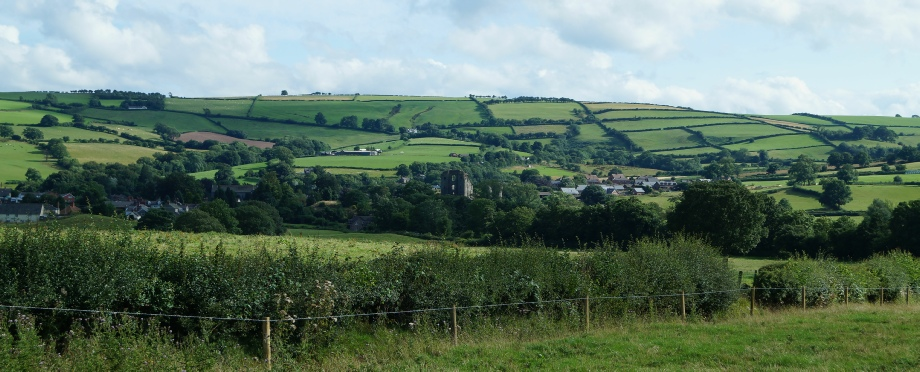
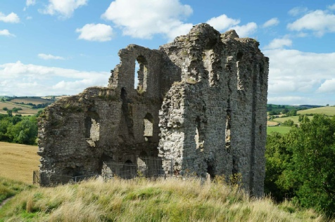

CLUN CASTLE, SY8 1AB
GETTING THERE
Postcode: SY8 1AB
Lat/Long: 52.4220N 3.0330W
Notes: Situated in the small village of Clun. Limited signs but village is easy to find. Some on-road parking in immediate vicinity to castle entrance but pay and display facilities available nearby.
WHAT IS THERE TO SEE?
The remains of a late thirteenth century great tower set atop of a motte. There are also limited remains of the curtain wall and the area of one of the two baileys is still open ground with a few surviving earthworks.
VISIT OFFICIAL SITE (Opens in new window)
Owned by the Duke of Norfolk and managed by English Heritage.
ADDITIONAL NOTES
1. The Great Tower was built for show; most evident by the fact some of the arrow loops were actually fake rather than usable.
{kind=link}

A fortress of the Border Marches, Clun Castle had an active military role from the Norman Conquest through to the final significant Welsh rebellion in the fifteenth century. Transformed into luxury accommodation it was slighted by Parliament in 1646.
HISTORY OF CLUN CASTLE
Clun Castle is thought to have been built by Picot de Say in the years following the Norman invasion to dominate a former Saxon village and to help sustain Norman rule in the troublesome border area (known as the Marches). In this latter role it was well placed to control movement on the Clun-Clee Ridgeway, a historic trading route in and out of Wales. Constructed to a traditional motte and bailey design it started as an earthwork and timber castle and had two baileys.
As a border outpost Clun Castle inevitably suffered as the fortunes of the Welsh ebbed and flowed. It was attacked and burnt to ashes in 1196 by Prince Rhys of South Wales. Rebuilt or repaired it was attacked again in 1214 by Prince Llywelyn ap Iorwerth (Llywelyn the Great). It was these attacks that probably led to the rebuilding of the castle in stone and this prompted another attack, again by Prince Llywelyn ap Iorwerth, in 1234. In this instance the castle withstood the siege but the associated town was destroyed by the attackers.
Edward I's conquest of Wales in the late 1270s/early 1280s meant the requirement for the castle as a border stronghold significantly diminished. Accordingly building priorities changed from defence to comfort and in 1292 Richard Fitzalan, Earl of Arundel, built the Great Tower to provide luxury accommodation most probably for hunting parties who made use of the nearby forest of Clun.
By the start of the fifteenth century it was used exclusively as a hunting lodge but was hastily re-fortified during the Owain Glyn Dŵr rebellion of 1400-14. Thereafter it reverted to disuse with a writer in 1539 describing the castle as ruinous. Even though it had played no part in the Civil War, Clun Castle was slighted in 1646 on the orders of Parliament.
{kind=link}

© Copyright 2016 | Terms and Conditions (inc Cookie Policy) | Contact Us